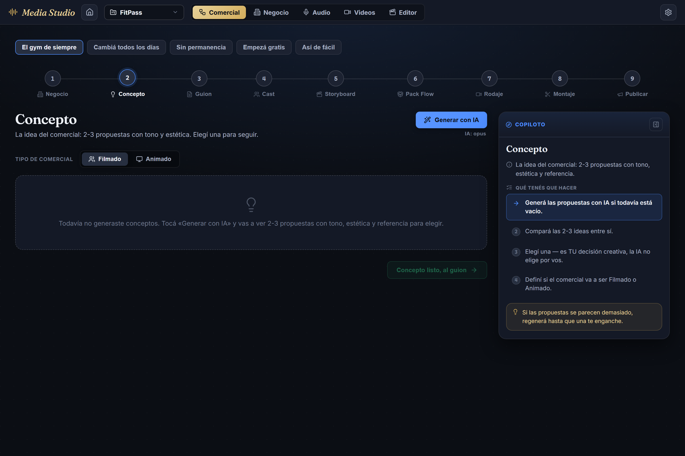
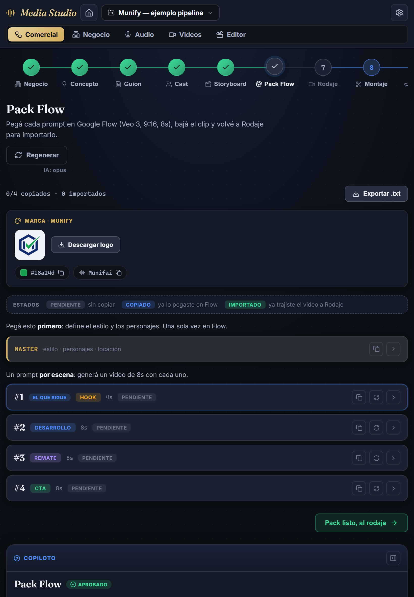
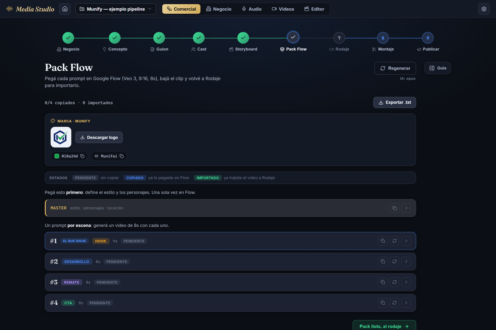

Un panel de guía contextual que llena el vacío de la derecha y explica, paso por paso, qué copiar y dónde pegarlo en Flow · Opus implementó, Fable especificó · 2026-07-10
0 Qué se hizo, de un vistazo
El dueño en el Pack Flow: "media pantalla vacía al pedo" + "no entiendo qué tengo que hacer, hay un master y abajo más cosas… necesito que me vaya guiando". Dos problemas de una: el contenido dejaba un hueco a la derecha, y la app no explicaba el proceso. El copiloto resuelve ambos. Solo presentación — un componente nuevo + datos puros + un endpoint proxy; cero lógica de estado/persistencia/moldes tocada.
Work orders
4
C1 layout 2 columnas · C2 Copiloto + datos · C3 Marca + proxy anti-SSRF · C4 claridad Pack Flow
Datos puros nuevos
2
lib/copiloto.ts (guía + progreso por paso) · lib/brandAsset.ts (validador anti-SSRF + href de descarga), ambos con test.
Tests
219 / 219
+45 nuevos (copiloto, brandAsset, settings). Verdes sin tocar un test previo. La lógica no se movió.
Qué es: un aside sticky a la derecha que acompaña TODO el pipeline y, para el paso activo, explica en criollo qué es, qué hizo la IA y —sobre todo— qué tenés que hacer vos (numerado, con los ítems cumplidos tildados y el próximo resaltado). Es dinámico: refleja el estado real (progreso, "0/4 copiados") y se pliega si molesta (preferencia persistida).
1 Pack Flow — el que disparó todo C1·C2·C3·C4
El hueco de la derecha se llena con la guía; el ritual de Flow queda explícito (copiá el MASTER una vez → copiá cada clip → bajá el mp4 → importá en Rodaje); el MASTER es una fila DESTACADA del mismo sistema colapsable que los clips (no un widget aparte); una leyenda de estados explica pendiente/copiado/importado; y el bloque Marca deja el logo descargable a mano.
Copiloto (derecha): el MASTER ya tildado, "Copiá el clip #1" resaltado como próximo, contador 0/4 copiados, el tip de no editar a mano, y la nota honesta de que el logo final se quema en el Montaje.
Bloque Marca: logo (vista previa) + Descargar logo, el color #18a24d y la fonética Munifai copiables con un click.
Leyenda de estados + MASTER unificado: el filete dorado marca identidad; #1 lleva el badge azul el que sigue.
2 El panel guía incluso VACÍO C2
Regla del gate: capturar el estado vacío, no solo el happy path. Abriendo un reel sin generar (FitPass · Concepto), el paso muestra su empty state y el copiloto igual guía: sin "Qué hizo la IA" (no hay contenido), con el primer paso resaltado — "Generá las propuestas con IA".
Concepto vacío · 1440px · el copiloto orienta desde cero

3 Responsive y plegado C1
Bajo 960px el copiloto pasa abajo del contenido (sin tapar nada, sin scroll horizontal). Y si molesta, se pliega: queda un botón Guía para reabrirlo, y el contenido recupera todo el ancho. La preferencia abierto/cerrado persiste en settings.ts.
820px · copiloto ABAJO

1440px · copiloto PLEGADO

4 Assets de marca descargables C3
Pedido del dueño: "todo lo que sea branding me lo tiene que dejar DENTRO de la app, no tengo que ir a una carpeta a buscar el logo — para poder mandárselo a Flow". El logo con dataURL se baja directo; el logo externo (host sin CORS, caso Munify) pasa por un proxy del server que lo sirve como Content-Disposition: attachment. Verificado end-to-end contra el logo real.
El proxy GET /api/brand-asset?url= descarga una URL arbitraria → superficie de SSRF. La garantía es pura (lib/brandAsset.ts::isAllowedBrandUrl, testeada) y el server la espeja agregando re-chequeo de la IP resuelta por DNS y redirect:'error' (corta rebotes a interno). Resultado real contra el endpoint vivo:
URL de prueba
Respuesta
Motivo
http://localhost:5301/api/health
400 rechazado
host interno
http://127.0.0.1/x
400 rechazado
IP privada/loopback
http://169.254.169.254/latest/meta-data
400 rechazado
IP privada/loopback (metadata cloud)
http://192.168.1.1/x · http://10.0.0.5/x
400 rechazado
IP privada/loopback
file:///etc/passwd
400 rechazado
esquema no permitido
http://2130706433/x (IP como entero)
400 rechazado
normaliza a 127.0.0.1 → loopback
http://db.internal/x
400 rechazado
host interno (sufijo)
https://look-guides.netlify.app/…/logo.svg
200 servido
host público → attachment
Cubre además IPv6 loopback/ULA/link-local ([::1], [fc00::1], [fe80::1]), CGNAT (100.64/10), hex ofuscado y basura. El validador tiene 18 aserciones en el suite de vitest.
6 Estado de los gates
tsc --noEmit
0
Sin errores de tipo.
eslint src/
0 err
9 warnings, todos preexistentes; ninguno en los archivos nuevos.
stylelint
0
CSS con tokens --st-*, jamás hex suelto.
vitest
219
16 archivos. +45 tests nuevos.
build
ok
Sin warnings nuevos (solo el chunk-size preexistente).
visual (Playwright)
0px
overflow horizontal en 1440 · 1040 · 820. Capturas miradas una por una.